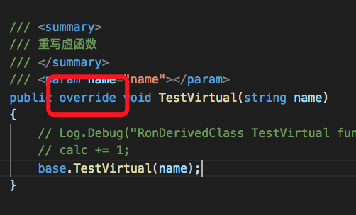
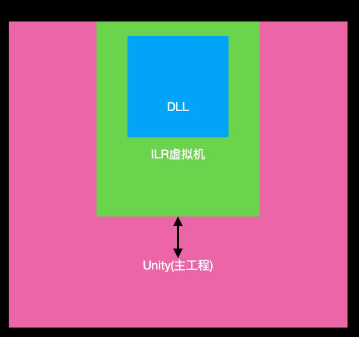
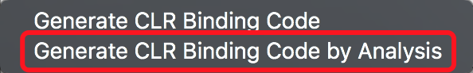

2018年8月22日 by Ron
官方地址
代码分支: feature/Hotfix_test_RonMacPro_180823
我的测试分支的源码里,直接搜索
RonILRuntime
就能快速找到对应的源码
然后,遇到一些奇怪的问题.我都总结在最后面.这个大家要注意一下
1, 首先要做的注意事项目
你需要将下列源码目录复制Unity工程的Assets目录：
Mono.Cecil.20
Mono.Cecil.Pdb
ILRuntime
2, 如果是UnityEngine.dll 引用不正确,则需要手动指引一下
3, 如果要调试,则需要安装对应的插件(目测只有windows下才有)
4, 为什么需要向ILRuntime注册委托?
不一定对. 由于C#跟C++交互(底层会通过IL2CPP转成C++),而C#的委托是一个对象类型,C++那边无法直接识别,所以要先向
ILRuntime注册这个对象的桥梁,让运行时,C++能正确识别
注意事项:
A, 同一种类型的注册一次即可
delegate void SomeDelegate(int a, float b);
Action<int, float> act;
上面2个只需要注册一个即可
appDomain.DelegateManager.RegisterMethodDelegate<int, float>();
B, 如果是带返回类型的委托，例如：
delegate bool SomeFunction(int a, float b);
Func<int, float, bool> act;
则这样注册
appDomain.DelegateManager.RegisterFunctionDelegate<int, float, bool>();
C, Action和Func的区别在于
Action就是定义一个没有返回的委托
而Func定义是一个有返回值的委托
D, 如果是自己的函数,没有采用Func和Action的,则需要自己额外手动写
例如我们在Hotfix.cs里面写的FairyGUI的委托.当出现自己的委托没有注册这个的时候.ILRuntime会自动提示你的
核心原理是 它要帮你转成 Action/Func 这样的类别来做桥接(我的理解)
this.appDomain.DelegateManager.RegisterDelegateConvertor<EventCallback0>((act) =>
{
return new EventCallback0(() =>
{
((Action)act)();
});
});
E, 总结以上的, 官方给出建议,尽量使用Func/Action这2个万能的委托. 并且尽量不要做跨域委托调用
F, 关于语法糖的委托测试. 在feature/Hotfix_test_RonMacPro_180823 分支下的 init.cs
// 我自己的测试没有参数的
mc.UseDelegateNoneArg( () => {
this.TestRonFuc();
}
);
// 测试1个参数的
mc.UseDelegate(s =>
{
Log.Debug(s);
}, "Hello!”);
// 测试2个参数的
mc.UseDelegateTwoArg( (a, b) =>
{
this.TestRonFucTwoArg(a, b);
}, "Hello Two Arg", 0
);
这里一个参数的(), s=>, (a, b) => 都只是对应参数个数而已
==================第二章-跨域继承==================分割线==================
1, 如果dll中要继承主项目的类, 或者实现主工程的一个接口, 则需要做跨域继承(跨域绑定).
详情可以参考 feature/Hotfix_test_RonMacPro_180823 分支
文件 ILRonTest_ ClassInheritanceTest_Adaptor.cs
在这里一点要千万注意的, 如果你的要继承某个函数,一定要用关键字override, 而非virtual, 如果用virtual
则会进2次这个函数, 找了很久, 但目前还尚未得知ILRuntime为什么这样

另外有必要说一点,当你运行时,dll里面(hotfix层的),全都包在ILRuntime里面,相当于是这样一个形态
dll里所有东西,都包在ILRuntime里面, 然后Dll <—> ILRuntime <—> Unity 这样的一个交互方式.
在我的理解中,

2, 尽量不要一个Adapter实现多个跨域继承.
如果是单个跨域继承的.则应该实现好这个接口(具体的代码可以看我的例子)
public override Type BaseCLRType
如果是一个Adapter要跨域继承多个的,则应该实现这个接口(具体代码看例子)
public override Type[] BaseCLRTypes
2个接口照着写就行了
public override Type AdaptorType
public override object CreateCLRInstance(ILRuntime.Runtime.Enviorment.AppDomain appdomain, ILTypeInstance instance)
3, 这一步是要实现类Adaptor, 我看例子是直接把这个类嵌套在ClassInheritanceAdaptor
class Adaptor : ClassInheritanceTest, CrossBindingAdaptorType
这个类基本copy就行了.
然后实现你要跨域的接口. 例如我例子中的这2个接口
public override void TestAbstract()
public override void TestVirtual(string a)
4, 当你把Adaptor做好之后, 就要在主工程里面做一个跨域继承的注册
Game.Hotfix.LoadHotfixAssembly();
#if ILRuntime
Game.Hotfix.appDomain.RegisterCrossBindingAdaptor(new ClassInheritanceAdaptor());
#endif
# 主工程里面这样用
ClassInheritanceTest obj = Game.Hotfix.appDomain.Instantiate<ClassInheritanceTest>("ETHotfix.RonDerivedClass");
obj.TestAbstract();
obj.TestVirtual("Create 1111”);
# dll里面这样用
RonDerivedClass obj = new RonDerivedClass();
obj.TestAbstract();
obj.TestVirtual("Hello world!");
===================第三章-ILRuntime中的反射--分割线===================
1, 根据上面的ILRuntime和主工程的交互,主工程是无法识别ILRuntime里的东西,那么通过反射就能调用了(我之前基本没接触过反射这概念,遇到这个后,比较好理解了).
A, 在主工程中,得到dll中的实例,并且通过反射调用他的某个方法
B, 并且在主工程里,通过FieldInfo的方式填充BPGameData实例的PlayTime属性.
// RonILRuntime 测试主工程获取dll中的对象
IMethod getBPGameDataMethod = Game.Hotfix.appDomain.GetType("ETHotfix.Init").GetMethod("GetBpGameData", 0);
object bpGameDataObj = Game.Hotfix.appDomain.Invoke(getBPGameDataMethod, null, null);
Log.Debug("主工程层获取bpGameData ========>" + bpGameDataObj.GetHashCode());
// 然后调用这个对象的方法 SaveGameData
IType dataType = Game.Hotfix.appDomain.LoadedTypes["ETHotfix.BPGameData"];
Type dataT = dataType.ReflectionType;
MethodInfo SaveGameDataFunc = dataT.GetMethod("SaveGameData", 0);
SaveGameDataFunc.Invoke(bpGameDataObj, null);
// // RonILRuntime 测试主工程获取dll中的对象 + 调用它带参数的某个方法
IMethod getBPGameDataMethod = Game.Hotfix.appDomain.GetType("ETHotfix.Init").GetMethod("GetBpGameData", 0);
object bpGameDataObj = Game.Hotfix.appDomain.Invoke(getBPGameDataMethod, null, null);
IType dataType = Game.Hotfix.appDomain.LoadedTypes["ETHotfix.BPGameData"];
Type dataT = dataType.ReflectionType;
IMethod imObj = dataType.GetMethod("SaveGameData", 1);
Game.Hotfix.appDomain.Invoke(imObj, bpGameDataObj, 5);
// 用反射设置instance中的值
FieldInfo playTimeFieldInfo = dataT.GetField("playTime");
object val = playTimeFieldInfo.GetValue(bpGameDataObj);
Log.Debug("得到dll中的bpGameData PlayTime的值 ======>" + val);
playTimeFieldInfo.SetValue(bpGameDataObj, 7777);
val = playTimeFieldInfo.GetValue(bpGameDataObj);
Log.Debug("设置后的属性值 PlayTime的值 2222 ======>" + val);
2, 在主工程中,如果要创建dll中的对象,然后在调用它的某个方法. 那么应该这么做
// A, 主工程创建dll中的对象 + 调用它的某个方法
IType bpGameDataIType = Game.Hotfix.appDomain.LoadedTypes["ETHotfix.BPGameData"];
Type bpGameDataType = bpGameDataIType.ReflectionType;
Log.Debug("主工程调用dll的 创建对象之前..........");
ILTypeInstance bpGameDataObj = Game.Hotfix.appDomain.Instantiate("ETHotfix.BPGameData");
MethodInfo mi = bpGameDataType.GetMethod("SaveGameData", 0);
mi.Invoke(bpGameDataObj.CLRInstance, null);
// B, 主工程创建dll中的对象 + 调用它的某个方法(带参数的)
IType bpGameDataIType = Game.Hotfix.appDomain.LoadedTypes["ETHotfix.BPGameData"];
Type bpGameDataType = bpGameDataIType.ReflectionType;
ILTypeInstance bpGameDataObj = Game.Hotfix.appDomain.Instantiate("ETHotfix.BPGameData");
IMethod im = bpGameDataIType.GetMethod("SaveGameData", 1);
Game.Hotfix.appDomain.Invoke(im, bpGameDataObj.CLRInstance, 5);
3, 在dll中, 实例主工程中的某个类型.然后在调用
// RonILRuntime 在这里用反射创建主工程的东西. 然后直接调用(这个是不带参数的)
Type myClassT = Type.GetType("ETModel.MyClass");
object newObj = Activator.CreateInstance(myClassT);
MyClass myClassObj = (MyClass)newObj;
myClassObj.Method("WirteLog”);
// 带参数的(其实dll中调用主工程中的,是可以不用通过反射的.
我问了ILR的技术人员,他的意思是ILR在哪个时候,能得到主工程里的信息.所以可以直接这样调用
myClassObj.WirteLogWithArg("不用通过反射直接调用");
4, 获取主工程的中某个对象
# 直接在hotfix工程里面定义一个这样的
public ETModel.Scene ModelScene;
Game.Scene.ModelScene = ETModel.Game.Scene;
为什么可以这样做, 是因为ILR已经识别主工程的东西,所以能直接赋值到dll里.
5, 限制: 在Unity主工程中不能通过new T()的方式来创建热更工程中的类型实例
这个是需要通过CLR重定向来做(因为反射没办法做,为什么? 我还没想明白).
因为那个时候,主工程无法直接dll中的类型,所以不能用new T(). 得通过反射来创建
类似这样
IObject obj1=(IObject)Activator.CreateInstance(System.Type.GetType ("ActivatorCreateInstance.ClassExam"));
6, 暂时不知道怎么获取静态对象
===================第四章-CLR--分割线===================
CLR重定向
重定向的目的是为了有一些无法直接通过反射来实现的东西,就需要这个了(譬如 new T()),
它的原理是ILR挟持了这个方法,当你调用的时候,它会转到去你注册的那个方法里.
下面以UnityEngine.Debug.Log()为例子
在ILRuntimeCLRBinding.cs里有一个GenerateCLRBinding函数
里面就有一行代码是
types.Add(typeof(Debug));
做CLR的2个目的是:
1, 为了防止在iOS被剪裁
2, 可以少用反射,和GC Alloc. 这样能提高效率
不过这里要注意的是,真正的在项目里做CLR的时候.不是这样的.
是点击这个来分析的

他的原理是加载Dll, 然后看dll中用到了那些函数. 譬如UnityEngine.Debug.Log这样的函数. 他就会去做CLR
我github的最新ET版测试代码(CLR分析的时候.依然会有Bug)
这条分支(已经在Mac上成功执行)